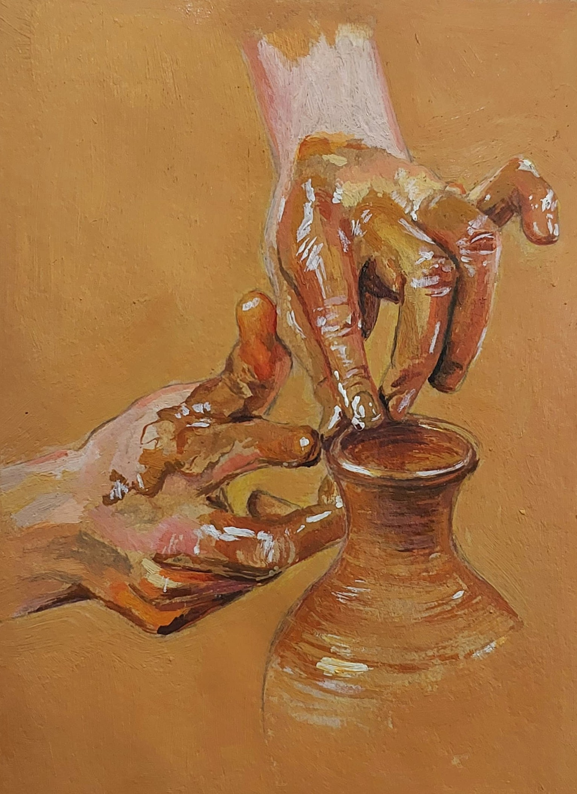
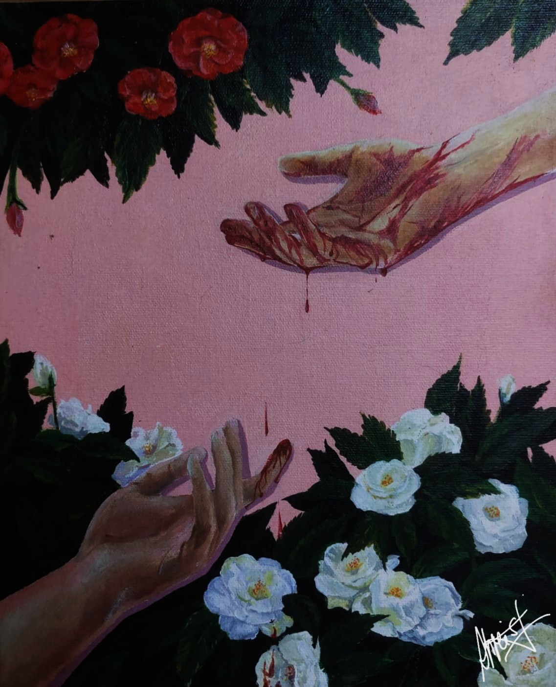
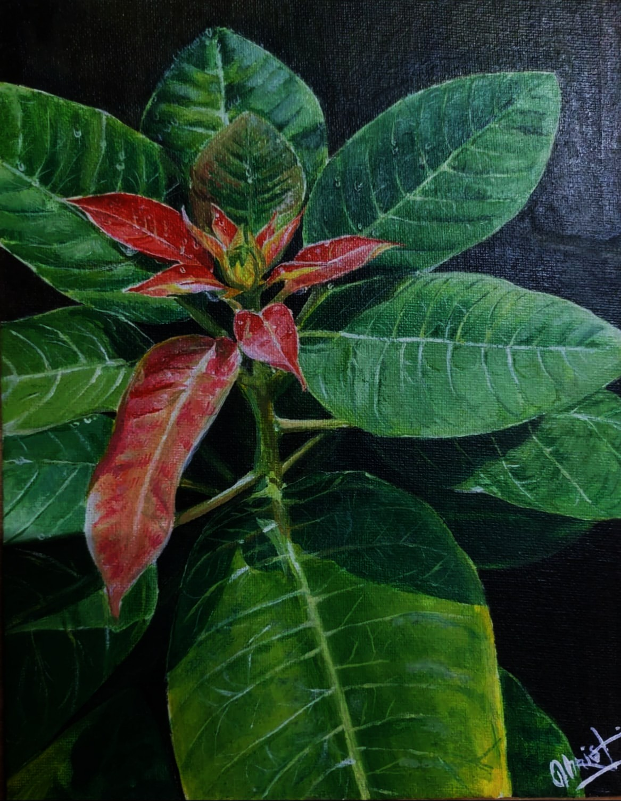
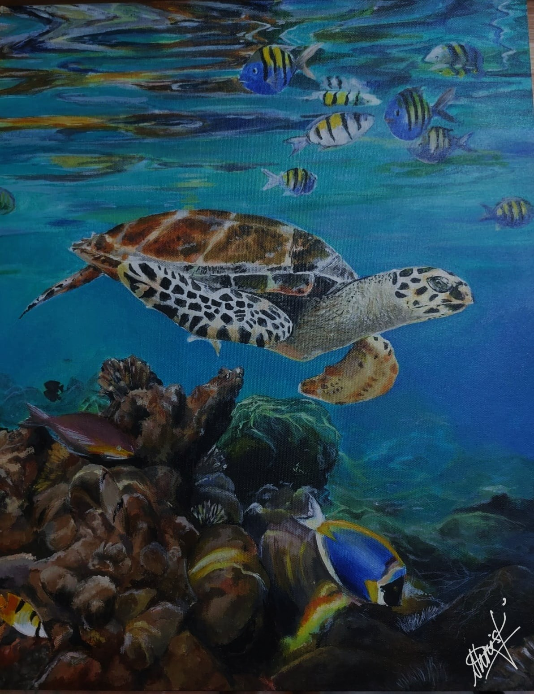
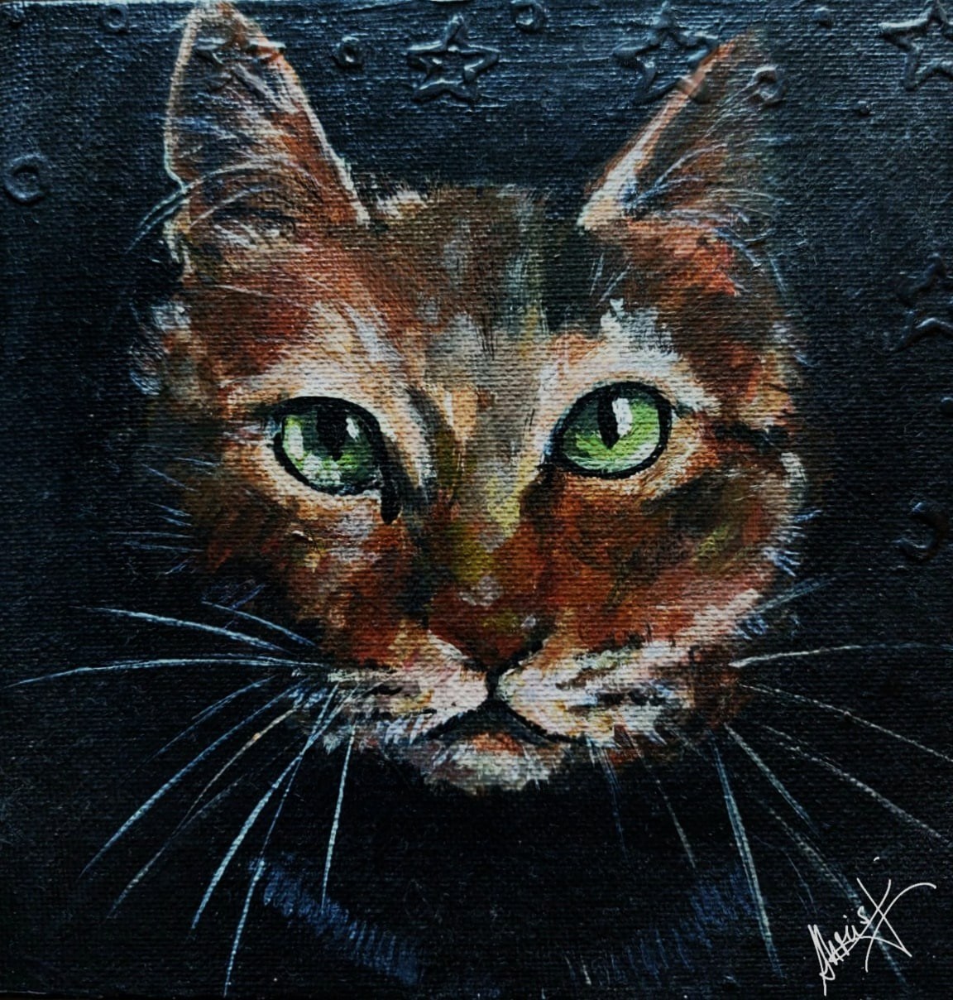
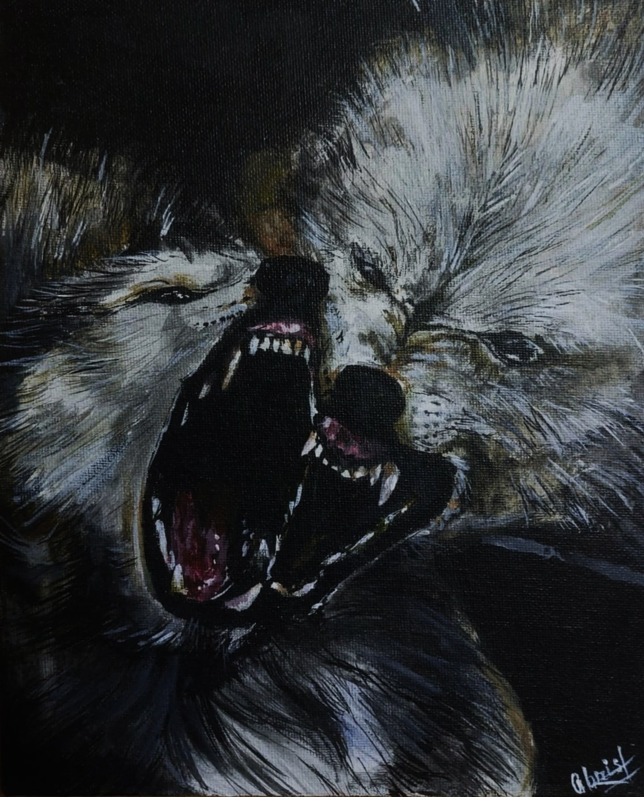
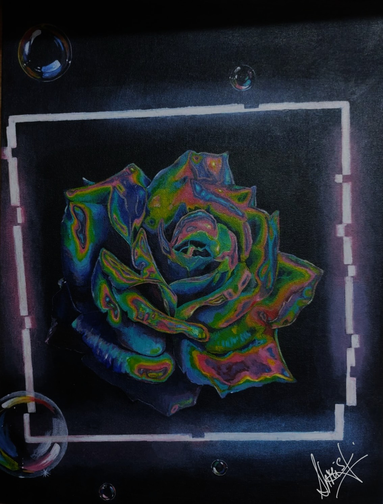
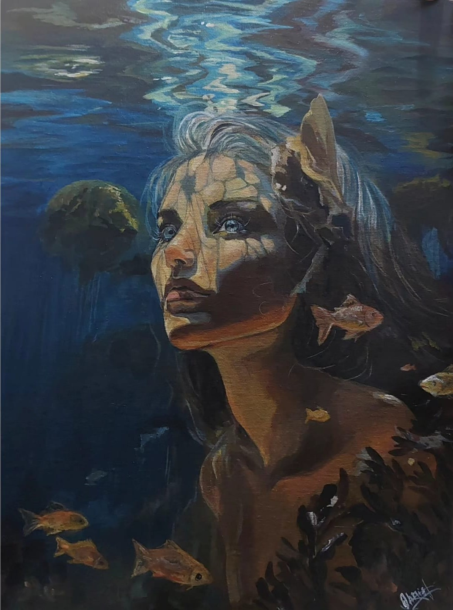

ACRYLIC ARTWORKS
An acrylic study on the texture of moist clay.
idk wtf this is, smth emo
This is a painting of a Poinsettia that once bloomed in my father's garden — a rare plant in our hometown. When I first asked my father its name, he simply smiled and said he didn't know. And so, together, we spent hours — two curious souls — scrolling through endless searches, following strange details and distant facts, until at last, we found its name. I have never forgotten it since. The Poinsettia is gone now — uprooted along with the rest of my father's old garden, to make space for a garage. But in its place, my father built a new garden on the terrace — grander, greener, and just as full of life. He still tends to it with the same quiet passion. This painting holds a memory: of a curious child and her equally curious father, lost in the simple joy of learning the story of a single, crimson flower. 
tortol go blub blub
This is a painting of repeated failure. I painted over this one 6x6 inch canvas again and again, changing subjects, changing mediums, changing perspectives. In the end, I never ended up liking the end product. It is uneven, scratchy, and worst of all, doesn't convey any emotions in me except my frustrations at failure. This small square serves as a quiet reminder: that even after years with the brush, I am still capable of falling short of my own expectations. And yet, therein lies the beauty — that with every stumble, every unfinished piece, the next stroke may fall better or worse — and that uncertain dance is what makes it all so endlessly captivating.
An animal study using acrylics.
A painting study to recreate the glow of neon lights and shine of soap bubbles.
A study of how light shining through a water surface reflects on a face.